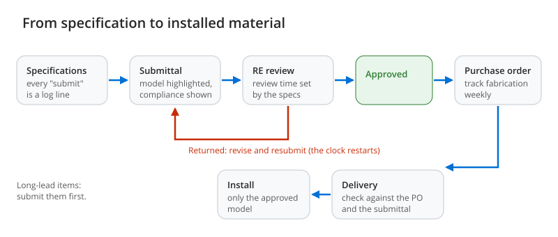

Phase 1: Preconstruction and design review
In one sentence: phase 1 is where you win or lose the schedule: everything you don't catch on paper now becomes a delay in the field later.

What happens
- Review the contract: Special Provisions: what they change and why they win, Project plans: sheet types, legends and electrical sheets and Standard Plans: the ES (electrical) series side by side. List every piece of equipment and every test.
- Find conflicts: utilities, right of way, drainage, existing electrical facilities, and conflicts between documents. Send RFIs early. See Writing RFIs.
- Baseline CPM schedule: the schedule Caltrans approves and measures you against.
- First submittals: traffic control plans, the water pollution control program, shop drawings and material submittals. See Submittals: what Caltrans expects.
- Order long-lead items: cabinets, batteries, routers, switches, fiber components, poles. See Procurement and long-lead items.
- Preconstruction meeting with the Resident Engineer: contacts, working hours, lane closure process, submittal routing.
PM checklist
- Submittal log built from the specifications.
- Long-lead list with supplier quotes and lead times.
- RFI log started.
- Schedule with procurement activities, not only field work.
- Existing-facility conflicts walked in the field, with photos.
Goal: approvals in hand and material on order before the crew needs them.
Common mistakes / what Caltrans actually checks
- Starting field work before submittals are approved.
- Ordering long-lead equipment only after the first one is approved, instead of submitting it first.
- Leaving procurement out of the baseline schedule.
- Not walking the site before the preconstruction meeting.